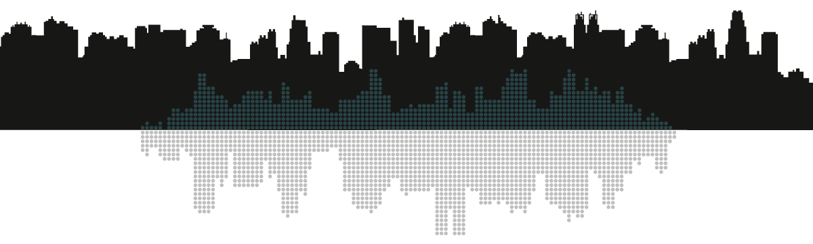
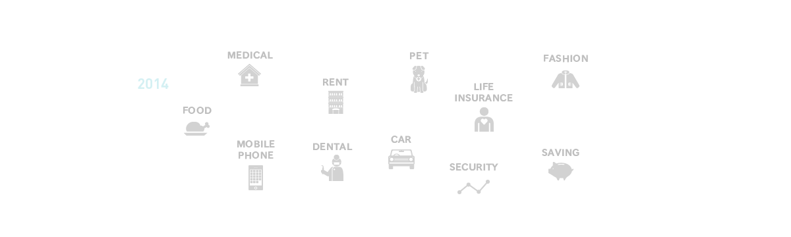
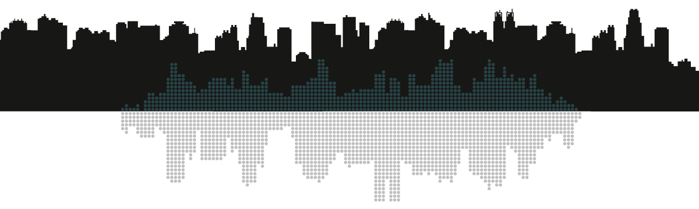
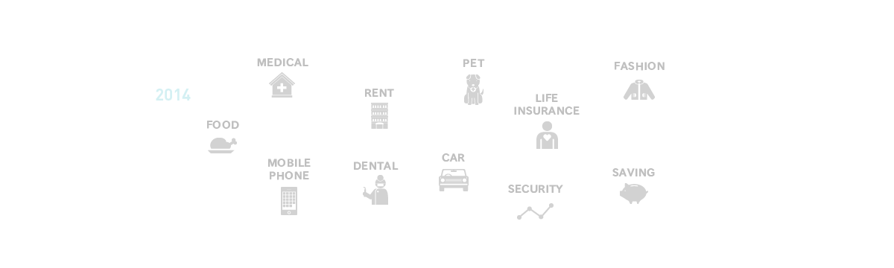
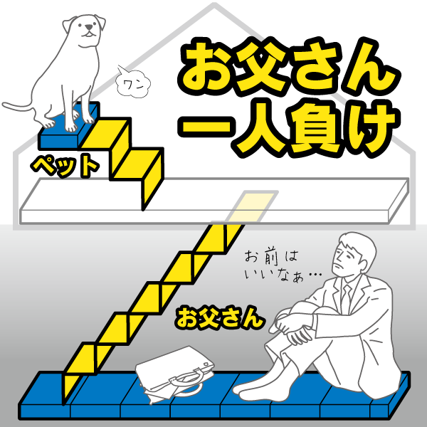
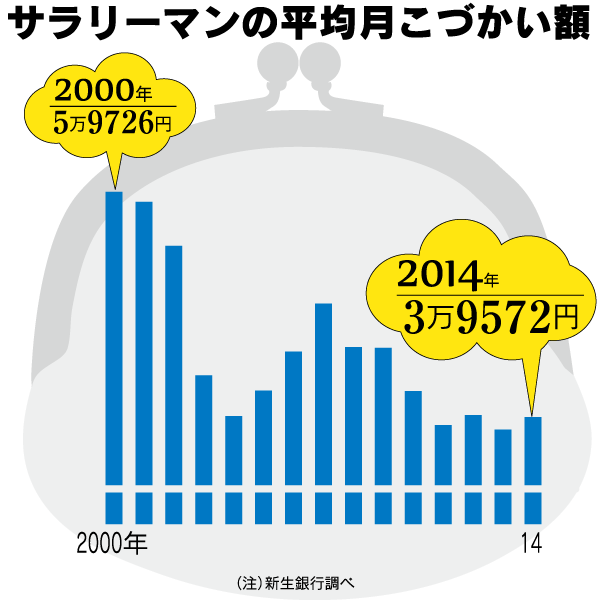

家計が縮小している。総務省の「家計調査」によると、全国の２人以上世帯の平均年収は2002 ～ 14年で１割減。消費支出も５％減った。
一方で貯蓄は６％増と防衛姿勢を強めており、「使えるお金」が減ったしわ寄せが主に父親に向かっている格好だ。（６月14日付の日本経済新聞朝刊参照）

それでも増えている支出はある。税や社会保険の負担も増すなか、膨らみがちな費目を知り、自分の家計を見直すことが「ゆとり」を確保する一歩になる。

消費支出の十大費目（食料、住居、光熱・水道、家具・家事用品、被服及び履物、保健医療、交通・通信、教育、教養娯楽、その他）で最も膨らんだのが14％増の交通・通信費。なかでもスマートフォンが普及した「移動電話通信料」と、ガソリン高などを受けた「自動車等維持」が急増している。
十大費目で最も金額が大きい食料費は３％減った。このうち「外食」は微減だが、東日本大震災が起きた11年に大きく落ち込んだ後は増加傾向にあり、ここ十数年でも高い水準に膨らんでいる。
10％増の保健医療費のなかで伸びが目立つのが「歯科診療代」。保険対象外でも見栄えを優先しセラミックやホワイトニングを利用する人が増えているようだ。また教養娯楽費が減少するなかでも「動物病院代」は大きく増え、ペットを飼う世帯がお金をかけていることが分かる。 （６月14日付の日経朝刊参照）
大きく減った消費支出としては、その他に分類される「仕送り」と、被服及び履物費が目を引く。進学した子供が生活費を奨学金やアルバイトで賄うウエートが拡大。衣料関連は低価格店の拡大も原因とみられる。住居費の「民営家賃」が下がったのは持家率の上昇や、賃貸物件の供給増が背景にありそうだ。
家計で使えるお金が減ったのは、収入減に加え金融資産を手厚くした影響もありそうだ。「通貨性預貯金」と「有価証券」が大きく伸び、現預金と投資による資産形成が進んだ。一方で「生命保険など」は負担を抑える見直しが進んだとみられ減少した。
こうした家計の変化に、私たちは具体的にどう対応すればいいのか。日経電子版マネーで「もうかる家計のつくり方」を連載中の家計再生コンサルタント、横山光昭氏がアドバイスする。
【データディスカバリー 記事一覧】
【データ・ディスカバリー 記事一覧】
- 制作・データ分析：
- 白尾和幸、赤尾朋子、鎌田健一郎、佐藤健、安田翔平
- 協力：
- ノースショア株式会社
- 制作・データ分析：
- 白尾和幸、赤尾朋子、鎌田健一郎、佐藤健、安田翔平
- 協力：
- ノースショア株式会社
お父さんが使うお金の割合が5.2ポイント減り、お母さんとペットが計5.4ポイント増えた――。６月14日付日経朝刊の「データディスカバリー」では、家計調査が示す家族間格差を紹介しています。
 